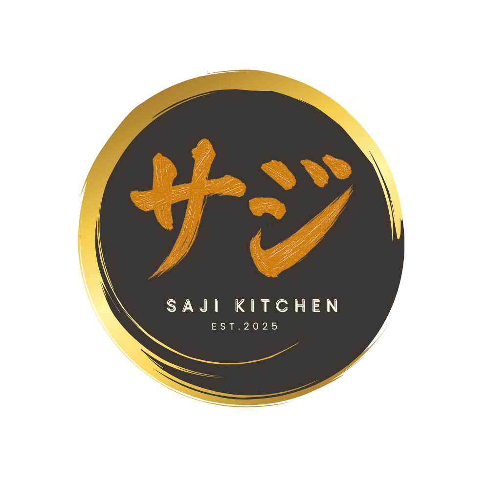

<link
  rel="stylesheet"
  href="https://cdnjs.cloudflare.com/ajax/libs/font-awesome/6.5.2/css/all.min.css"
/>

<footer class="footer">
  <div class="footer-container">
    <div class="footer-col">
      
      <p class="footer-desc">
        Saji Kitchen adalah surga bagi para pecinta kuliner. Kami menyajikan
        hidangan lezat yang dibuat dari bahan-bahan segar pilihan dengan resep
        otentik.
      </p>
      <div class="social-media">
        <a [href]="api_instagram" target="_blank" aria-label="Instagram"><i class="fab fa-instagram"></i></a>
        <a [href]="api_x" target="_blank" aria-label="Twitter"><i class="fab fa-x"></i></a>
        <a
          [href]="api_wa"
          aria-label="WhatsApp"
          target="_blank"
          ><i class="fab fa-whatsapp"></i
        ></a>
      </div>
    </div>

    <div class="footer-col">
      <h3>Alamat Kami</h3>
      <p>
        Jalan Intan 3, Cluster Griya Ma'wa,<br />
        Blok C3-16,<br />
        Gunung Sindur, Bogor<br />
        Jawa Barat, 16340<br />
        Indonesia
      </p>
      <a
        href="https://maps.app.goo.gl/BVbnwycQyDzViaWx9"
        target="_blank"
        class="map-link"
        >Lihat di Google Maps</a
      >
    </div>

    <div class="footer-col">
      <h3>Jam Operasional</h3>
      <ul class="jam-operasional">
        <li><span>Senin - Jumat:</span> 09:00 - 18:00 WIB</li>
        <li><span>Sabtu - Minggu:</span> Tutup</li>
      </ul>
    </div>
  </div>
  <div class="footer-bottom">
    <p>&copy; 2025 Saji Kitchen. All Rights Reserved.</p>
  </div>
</footer>
